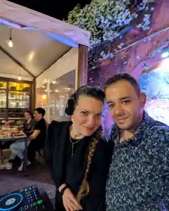
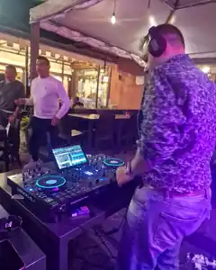

Locali e rooftop
Aperitivi, cocktail bar, ristoranti e dopocena con una direzione musicale riconoscibile.
DJ set per localiRoma · Disco · House · Nu-disco
Selezione elegante e ballabile per locali, aperitivi, feste private ed eventi a Roma, in formula solo o duo. Niente playlist casuali: un suono costruito per il pubblico e per il momento.


Roma e dintorniEventi e venue
Disco / HouseElegante, non prevedibile
Solo o duoFormat su misura
Contatto direttoRisposta rapida
Il progetto
Alex Di Falco porta nei locali e negli eventi una selezione che unisce groove disco, house raffinata e contaminazioni nu-disco. Per alcune serate il progetto prende forma anche in coppia con Claudia: due sensibilità in consolle, la stessa cura nel leggere l'atmosfera.
Per un aperitivo al tramonto, un dopocena, una festa o un evento privato, la musica viene pensata sul contesto: ospiti, orari, identità del locale e obiettivo della serata.
Live moments

Formula duo
Quando l'evento lo richiede, il DJ set può diventare un percorso condiviso: selezione, presenza e dinamica in consolle pensate per accompagnare l'aperitivo e portare la serata verso il ballo.
Richiedi la formula adatta all'eventoDove suoniamo
Aperitivi, cocktail bar, ristoranti e dopocena con una direzione musicale riconoscibile.
DJ set per localiCompleanni, feste e occasioni speciali: atmosfera curata e pista quando arriva il momento.
DJ per eventi privatiIl format musicale viene costruito sulla location, sugli ospiti e sul tipo di energia desiderata.
Parliamo del formatSound
Groove caldi, vocal, edit ricercati, classici riletti con gusto e musica contemporanea capace di non sembrare una compilation da palestra.
Prenotazione
Booking
Descrivi il tuo evento o il tuo locale. Ti rispondiamo con disponibilità e proposta musicale.
Prenota un DJ set